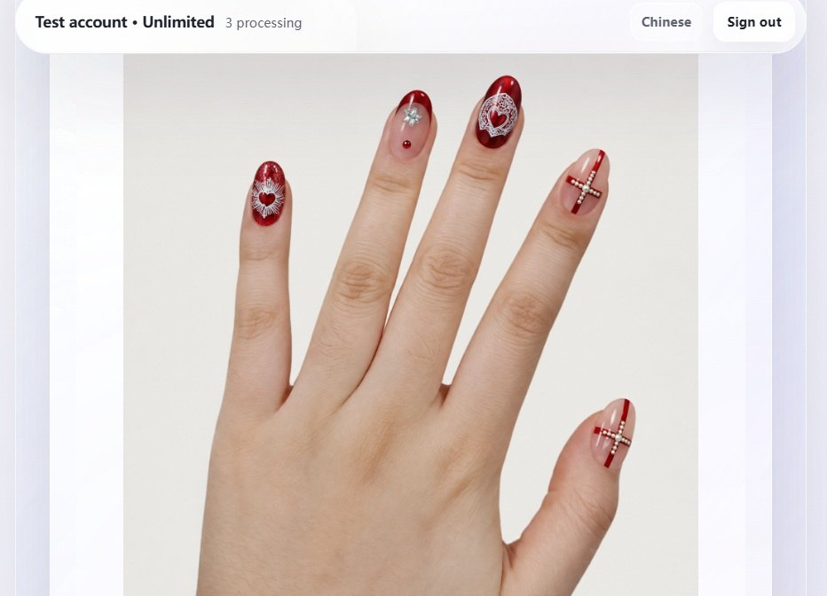
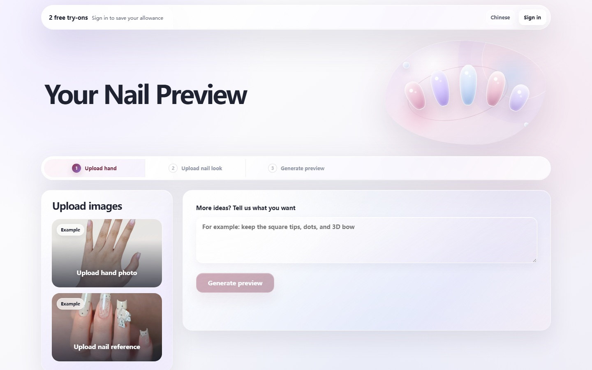
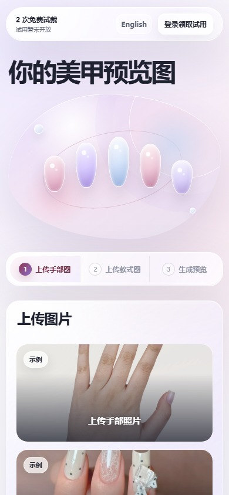
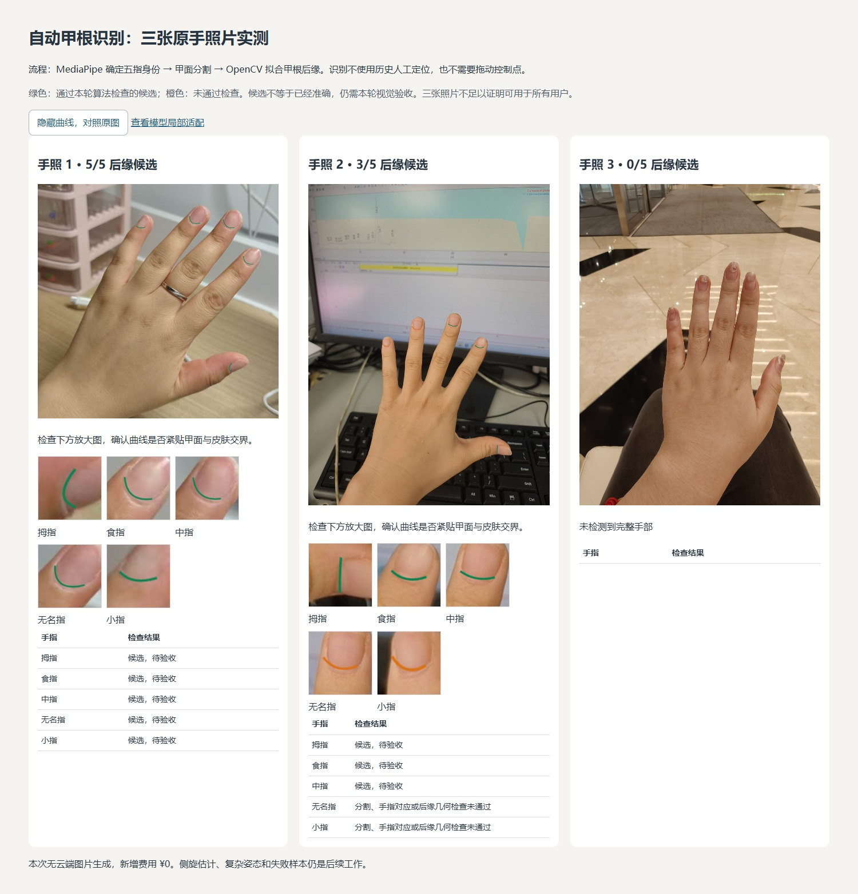
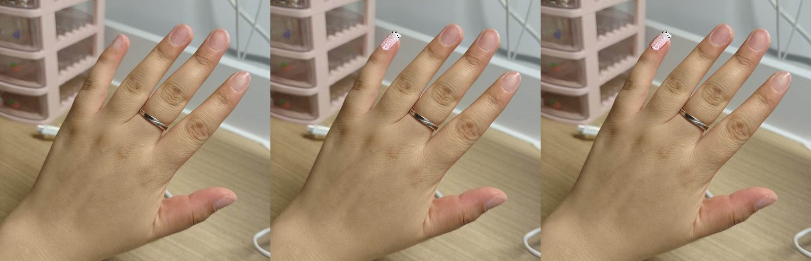
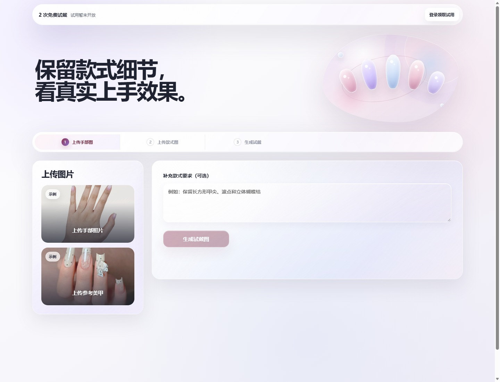

Case 02 · 个人项目 · 多模态评测
AI 美甲虚拟试戴网站
AI Nail Virtual Try-On & Visual QA
搭建逐指匹配与手动校准试戴原型，建立逐指评测标准，完成 18 组归因复盘与 31 组离线回归测试。

原型搭建与逐指校准
基于 Next.js 搭建公网原型，结合 MediaPipe 手部关键点定位与 Seedream 生成能力，实现参考款上传、逐指匹配与手动校准流程。


多模态标准与归因复盘
建立五指逐指评测标准（结构定位、甲型比例、逐指图案、材质融合、保护区）做逐图对照；复盘 18 组生成记录，剥离模型偏差与合成错误，定位串款、图案重绘、甲型拉伸及坐标错位根因。

回归断言与像素级验证
将局部修改约束固化为脚本断言，修复后通过 31 组离线测试与 4 组 Canvas 像素检查回归，并排查标记历史评测记录中的字段口径冲突。

